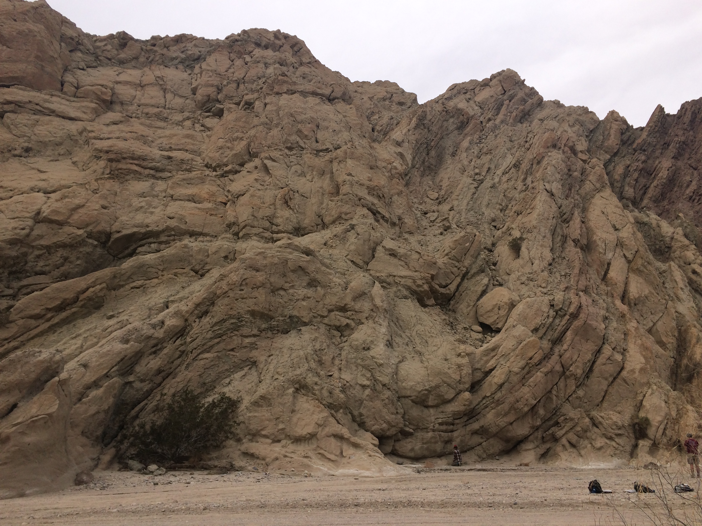
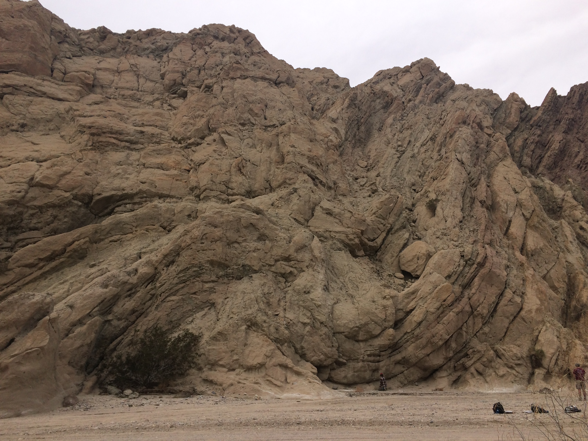

San Andreas Fault Mapping Project, 2017
Painted Canyon, CA
As an exercise in Carleton College's structural geology class taught by Sarah Titus, we spent a weekend mapping a portion of the San Andreas Fault in Painted Canyon in Southern California. The class worked in small groups of three, each of which was responsible for identifying contacts, faults, and folds in our assigned mapping area.
 
